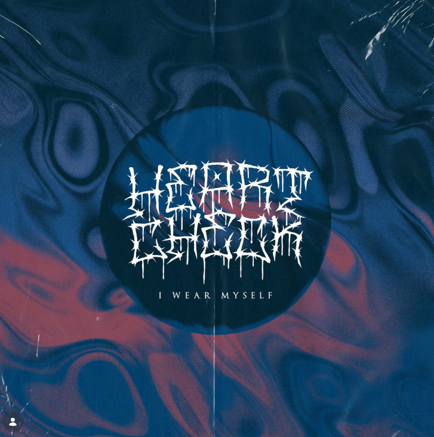

01
HEART CHECK TX // NEW FREQUENCY
I WEAR
MYSELF.
NO MASK. NO APOLOGY.
Music, visuals, and live moments from Heart Check TX. Enter the sound.

/// HEART CHECK TX ✳ I WEAR MYSELF ✳ LIVE / LOUD / UNFILTERED ///
01 / On the calendar
NEXT SHOWS.
This is a design placeholder. Replace it with confirmed dates and ticket links before launch.
02 / Transmission
SOUND & VISION.
02
03
03 / Behind the signal
THE BAND.
THE SOUND.
HEART CHECK TX. This space is ready for the band's official biography, members, influences, and what makes its sound distinct. Replace this text with verified band information.
Connect ↗04 / Keep the connection
STAY TUNED.
Find the latest shows, music, videos, and news. Add the band's verified social profiles and booking email before publishing.